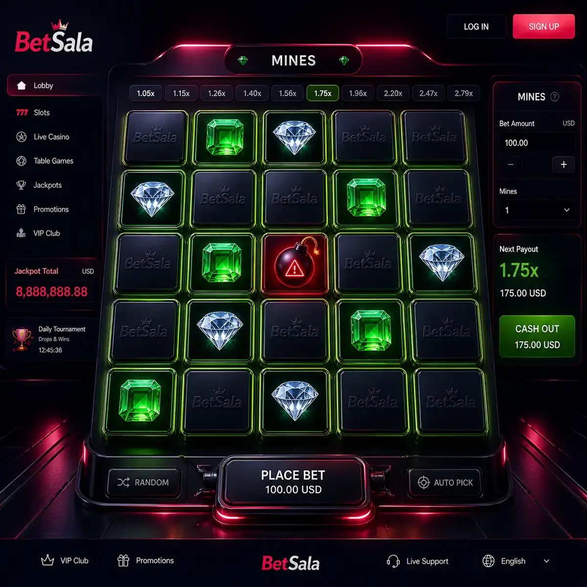

Casillas
Cada selección puede aumentar premio o terminar la ronda.
BetSala Mines se basa en elegir casillas, evitar minas y decidir cuándo retirar, con un riesgo que aumenta a medida que el usuario avanza.

Las búsquedas BetSala Mines Chile y BetSala Mines apuntan a un juego donde la toma de decisiones parece simple, pero el riesgo cambia en cada movimiento. Elegir una casilla extra puede modificar por completo la ronda.
Conviene definir de antemano cuántas selecciones máximas harás y cuándo retirarás. Sin esa regla, el juego puede empujar a seguir buscando un premio mayor.
App BetSala
La decisión clave es cuándo detenerse
Cada selección puede aumentar premio o terminar la ronda.
A más casillas elegidas, mayor tensión y exposición.
Salir a tiempo forma parte de la mecánica.
Evita tocar casillas por error en pantallas pequeñas.
Leer másElementos clave del juego
| Tema | Qué revisar | Uso en Chile |
|---|---|---|
| Casillas | Selección manual | Cada toque importa. |
| Minas | Riesgo oculto | Puede terminar la ronda. |
| Retiro | Cierre voluntario | Debe definirse antes. |
| Mobile | Control táctil | Cuidado con pulsaciones accidentales. |
Una estructura simple reduce decisiones impulsivas.
Mines no usa la misma lógica visual de multiplicador creciente que Aviator o Lucky Jet. Aquí el usuario toma decisiones por casillas, lo que puede generar una sensación de control distinta.
Esa sensación no elimina el azar. Por eso la lectura responsable es la misma: presupuesto, tiempo limitado y pausa ante pérdidas consecutivas.
Ver Aviator
Sí, pertenece al grupo de juegos rápidos dentro del entorno de casino.
El usuario decide cuándo retirar, pero el resultado de las casillas incluye azar.
Solo si las condiciones indican que el juego es válido para ese bono.
Sí, si la versión mobile carga bien, pero hay que evitar toques accidentales.